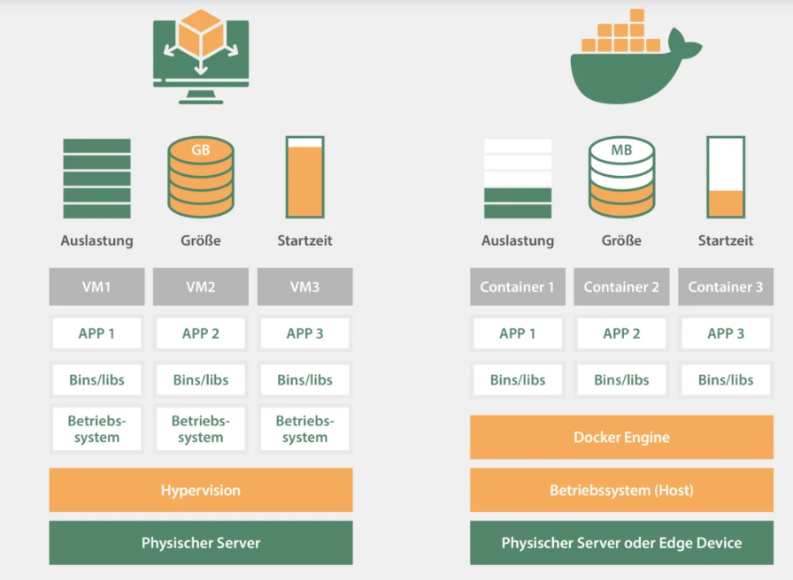

Business Intelligence
Cloud Plattformen (1)
Was ist cloud computing?
"Cloud computing is a model for enabling ubiquitous, convenient, on-demand network access to a shared pool of configurable computing resources (e.g., networks, servers, storage, applications, and services) that can be rapidly provisioned and released with minimal management effort or service provider interaction. This cloud model is composed of five essential characteristics, three service models, and four deployment models."
Charakteristik - on-demand and self-service
- Interaktion mit Admin oder irgendeiner Person fällt weg keine personelle Abhängigkeiten
- Eigenständiges bereitstellen einer computing-ressource zu jeder Tageszeit
- Ermöglicht flexible, spontane und agile Entwicklungsprozesse
Charakteristik - broad network access
- Sehr felxible Zugangsmöglichkeit um auf die computing-Ressourcen zuzugreifen
- Alle Funktionalitäten über den Browser oder Apps erreichbar
- Die Art und Konfiguration des clients Rechners spielt eine untergeordnete Rolle (Smartphone, tablet, iOS, Linux, ...)
Charakteristik - resource pooling
- Die potentiellen Ressourcen eines Nutzers werden mehreren Nutzern zur Verfügugn gestellt und sind nicht statisch reserviert
- Multi-tenant - mehrere Kunden nutzen die gleiche computing Hardware ohne voneiannder zu wissen oder sich gegenseitig zu beeinträchtigen
- Die Ressourcen werden verbrauchasabhängig verteilt
- Nur begränzten Einfluss auf geo-location der Ressourcen meist nur über Region (North-europe) seltener über Land(Staat) oder Rechenzentrum
Charakteristik - rapid elasticity
- Beim hoch- oder runterskalieren der Ressourcen gibt es keine negativen Konsequenzen für den Nutzer
- Theoretisch unbegrenzte Ressourcen - aber auch unbegrenzte Kosten
- Die Ressourcen werden verbrauchasabhängig verteilt
Charakteristik - measured service
- Monitring der Verbräuche und Auslastung, ermöglicht Analyse wieviele Ressourcen benötigt werden um bestimmte tasks zu erfüllen
- Kosten können verringert werden
- Transparenz und Planungssicherheit
Service Models - SASS - Software as a Service
- Anwendungen können in der cloud infrastruktur genutzt werden
- Hierbei kommt wieder die Charakteristik "broad network access" zu tragen Zugriff von vielen verschiedenen client-Plattformen
- Der Nutzer hat keine Kontrolle über die Konfiguration der unterliegenden Komponenten wie z.B. das Betriebssystem, Speichertechnologie, Netzwerk oder Rechenkapazität
- Azure SQL
Service Models - IASS Infrastructure as a Service
- Dem Nutzer wird eine Basis-infrastruktur zur Verfügung gestellt Speicher, Rechenkapazität und Netzwerke
- Es kann eigenständig ein Betriebssystem und Software installiert werden
- Erweiterte Konfigurationsmöglichkeiten über z.B. Netzwerkkomponenten können bereitgestellt werden (Firewall, Ports etc.)
- VM und Container
Service Models - PASS Platform as a Service
- Ordnet sich zwischen SASS und IASS an
- Nutzer bekommen eine Application vom Anbieter deployed in der cloud Infrastruktur
- Diese Applikation kann komplett vom Nutzer konfiguriert werden
- Zusätzlich können auch Konfigurationen für das Betriebssystem und den Speicher vorgenommen werden
- App Engines
Service Models - Weitere models
- Database as a Service
- Function as a Service
- Bare Metal as a Service
Deployment models
- Private cloud - Für eine Organization wird exklusiv Infrastruktur bereitgestellt
- Community cloud - Mehrere Organisationen mit gleichen Interessen teilen sich die cloud-Infrastruktur
- Public Cloud - Die cloud Infrastruktur kann von jeder Institution oder natürlichen Person im Rahmen der festgelegten AGB genutzt werden
- Hybrid Cloud - Zwei oder mehr getrennte cloud Infrastrukturen sind durch angeglichene Standards und Technologien miteinander kompatible, Daten und Anwendungen können portiert werden
Microservices

Unabhängig - Autonom - Dezentral - Lose verbunden
Microservices
- Viele komplexe Anwendungen sind intern monolithisch strukturiert, viele Komponenten die fest verbunden sind
- Microservices sind alleinstehende Dienste und können uanbhängig gewartet und weiterentwickelt werden
- Interaktion der Microservices mit APIs (REST)
- Ein Microservices (und der Entwickler) kennt nur die Schnittstelle eines verbunden microservices und muss nichts über die interne Funktionsweise wissen
- Organisatorischer Vorteil für Entwicklerteams - beschleunigte Entwicklungszyklen durch weniger Abhängigkeiten
Microservices - Vorteile
- Verteilte Entwicklung
- Beständiges System
- Hohe Skalierbarkeit
- Ressourceneinsparung
- Schutz vor Totalausfällen
- Individuelle Anpassbarkeit
- Einfacher Zugriff
Microservices - Herausforderungen
- Bei der Migration zu microservices die anpassung des Entwicklungsprozess
- Tests schreiben
- Versionierung - abwärtskompatibel
- Deployment - musss automatisiert werden
- Protokolle und Logs liegen verteilt
- Keine zentrale Überwachung
- Debugging
Docker Container
"A container is a standard unit of software that packages up code and all its dependencies so the application runs quickly and reliably from one computing environment to another. A Docker container image is a lightweight, standalone, executable package of software that includes everything needed to run an application: code, runtime, system tools, system libraries and settings."

Docker verglichen mit einer virtual machine

Docker wichtige Begriffe
- Dockerfile - Eine Textdatei erstellt mit verschiedenen Befehlen ein Image
- Image - Ein Speicherabbild eines Containers, portabel, aus einem Image können immer mehrere Container gestartet werden
- Container - Aktive Instanz eines Images, wird ausgeführt bis die Aufgabe erledigt ist
- Repository - Satz gleichnamiger Images mit verschiedenen Tags und Versionen
- Registry - Docker Hub oder Artifactory in dem mehrere Repositories verwaltet werden
Apache und Open Source
https://geekflare.com/de/opensource-cloud-platforms/ https://de.wikipedia.org/wiki/Apache_Software_Foundation https://www.apache.org/index.html#projects-listOn-premise vs. cloud
Ist Cloud günstiger als On-premise?
Cloud umsatz und Erfolgsgeschichte Statistiken
Anbieter von cloud computing
- Microsoft Azure
- Amazon AWS
- Google Cloud Platform (GCP)
Unpopuläre Anbieter
- Microsoft Azure
- Amazon AWS
- Google Cloud Platform (GCP)